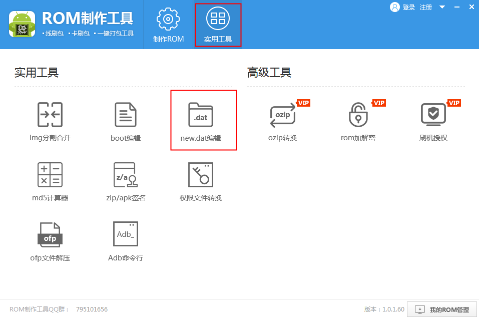
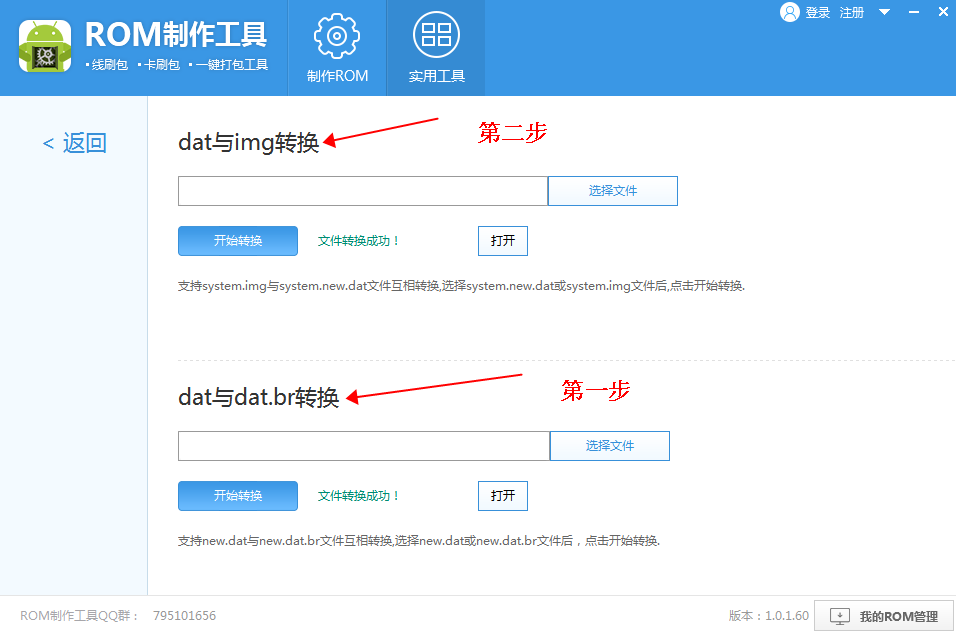

概述
这两篇后台启动 Activity 的文章的 Demo 工程见 Github, 如有问题欢迎提出。
前段时间调研 Android 后台启动 Activity 的方案，参考 实战|Android后台启动Activity实践之路 一文，当时的结论如下：
原生Android ROM
Android 原生 ROM 都能正常地从后台启动 Activity 界面，无论是 Android 9(直接启动) 还是 10 版本(借助全屏通知)。
定制化ROM
Android P版本的机型：
- 通过 moveTaskToFront 方法将应用切换到前台，如果切换失败的话可以多尝试几次调用 moveTaskToFront 方法；
- 小米机型可以通过Hook相关参数来后台启动Activity；
Android Q版本的机型：
- 通过系统全屏通知的方式调起后台 Activity；
- 在一些另作了限制的 ROM 上可能调起失败；
后来又想到如果能够拿到这些机型 ROM 的源码，那么通过阅读 startActivity 以及后台启动权限设置页面的源码，那么就有可能找到破解的方法。至于怎么获取 ROM 的源码，我这里有两种方式：
- 如果手里有现成的机型，则可以直接将
/system/framework/中的内容通过adb pull命令拉下来，然后通过一些反编译工具可以查阅相关的源码； - 去相关厂商的官网下载对应机型的 ROM 包，通过工具将其解压转换，最终也可以拿到源码。
这篇文章主要是延续上篇文章的内容，介绍一下怎么拿到 ROM 包源码，并以小米某机型为例，找出它们针对后台启动权限所做的定制化。
获取ROM源码
adb pull
我一开始也没想到原来不需要 root 权限即可从手机里 pull /system/framework/ 里的内容，方式也很简单，手机连接电脑后运行命令即可在当前路径下拿到 framework 文件夹内容：
1 | adb pull /system/framework |
这种方式做过 Android 开发的应该都知道，就不再多说了。不过需要注意的是在一些机器里 pull 下来的 framework 文件夹下的 jar 文件可能都是只有 1Kb 的大小，这种 jar 文件里不含有源代码，在 framework 下还有一些 odex 文件，需要将其转换成 dex 等格式才更好反编译，具体怎么转换的可以网上搜，貌似还有挺多教程的。
解压ROM
首先去对应厂商的官网下载 ROM 包，以小米为例是在 MIUI下载 里下载，下载了目标 ROM.zip 后将其解压缩，我下载的是小米 Max3(Android 9) 的 ROM 包，解压后我们需要的有两个文件: system.new.dat.br 和 system.transfer.list。接下来分步骤看看怎么反编译出它的源码：
- 下载 ROM 制作工具: 下载地址，下载安装打开后，选择其
实用工具栏，然后打开new.dat编辑功能，如下图：

- 按照下图的两个步骤转换。首先第一步选择
system.new.dat.br文件转换，得到.new.dat后缀的system.new.dat文件；然后第二步选择这个system.new.dat文件转换，可能提示需要.transfer.list文件，直接选择上面的system.transfer.list文件即可，转换后会得到一个 img 后缀的文件，将其解压缩。

- 打开解压缩后的文件夹，进入
/system/framework/目录下，即可看到我们需要的 jar 文件们。
反编译ROM源码
这一步是要将上面得到的 jar 或者 dex 文件反编译得到源码，网上有很多介绍反编译的文章，也有很多工具比如说 apktool, dex2jar, jd-gui 等，这里介绍一个傻瓜式操作的工具——jadx，如果想要省事的话可以直接使用这个工具，它可以直接打开 jar, dex, apk 等后缀的文件，直接查看反编译后的源码，是不是很方便呢？
另外如果要使用 jd-gui 查看的话，网上有很多教程了，也可以直接参考 反编译工具(这是我好多年前写的，质量不太好哈)，或者直接 --help 查看相关工具的 Usage。
后台启动权限做了什么？
经过上面的步骤我们得到了 ROM 反编译后的源码，这一章开始进入具体的源码分析流程。从之前 实战|Android后台启动Activity实践之路 可以知道，当我们调用 startActivity 后，会来到 AMS 这一端，AMS 进行了一些处理后，会调用到 ActivityStarter.startActivity 方法，对这个流程有疑问的可以看看 Activity 的启动流程，可以参考 Android-Activity启动流程。查看反编译后的代码，发现里面调用了小米自定义的 Inject 类中的静态方法(在 services.jar 中)：
1 | private int startActivity(IApplicationThread paramIApplicationThread, Intent paramIntent1, ...) { |
其实这样的 XXXInject 类在源码中还有很多，都是用来做一些自定义逻辑的，我们重点看下这个 ActivityTaskManagerServiceInjector.isAllowedStartActivity() 方法的逻辑：
1 | static boolean isAllowedStartActivity(..., Intent paramIntent, ...) { |
接下来我们从上面标的数字讲起：
- 首先看看数字2的部分：我们看到了这里有一个 OpCode=10020, 这个 Code 对应的权限也是小米增加的，看下面的日志可以知道这个 Code 就是我们常看到的小米锁屏显示的权限，由此可以知道如果我们调用 startActivity 时手机没有解锁，那么会走到这个流程，判断应用有没有这个 10020 的权限，如果有则接着往下走，如果没有权限则直接返回 false 表示不能启动目标 Activity。
- 然后看数字3的部分：跟上面类似，它处理 OpCode=10021 的权限鉴定，这个值跟我们在前一篇文章里讲到的后台启动权限的 Code 是一样的！也就是说这段代码就是用来判断应用有没有后台启动的权限的。
至于这两个权限相关的日志：Permission Denied Activity KeyguardLocked: ... 和 Permission Denied Activity: ...，我们在遇到这两种场景后，在 logcat 中过滤 MIUILOG Tag 是可以看到这两种日志输出的，有兴趣的同学可以验证一下~
接下来再看数字1部分，这里就是我们绕过这两个权限的关键！它在这个方法的开头，如果这个 if 判断为真的话则会直接返回 true，从而跳过后面权限认证的逻辑，我们重点关注 (paramIntent.getMiuiFlags() & 0x2) != 0 这个判断条件：由此可以看出小米在 Intent 类中增加了一个形如 MiuiFlags 的标志位，我们打开 Intent 类看看具体情况，Intent 类在 framework.jar 中：
1 | public class Intent implements Parcelable, Cloneable { |
果然，Intent 中被增加了一个标志位，那么我们估计就知道怎么去解决这个问题了，那就是在小米平台上通过反射将我们的 Intent 参数中的 mMiuiFlags 设置成 0x2 即可绕过这两个权限的认证！
另外这里要注意一个问题：在 Android 9 以上 Intent 类中的属性是不能被反射的，因此我们需要想办法解决这个问题，网上已经有了许多现成的方式，这里我就不做展开了，想了解具体原理的直接 Google 即可。我借用了 Github 上的一个开源库——FreeReflection，通过它可以方便地防止反射 Intent 抛出异常崩溃。
经过实际测试，当我将 Intent 中的这个属性修改成 0x2 以后，可以直接从后台或在锁屏时启动我们应用的 Activity。
总结
其实整体来说这套解决方案还是挺简单的，在找到工具反编译 ROM 代码后，熟悉 Activity 启动源码的同学还是能比较轻松地找到其中的突破点的，当然中间可能会走错方向，像我有时候就容易盯着一个跟目标毫无关联的方法看，因为不能确定到底哪里才是真正的关键点。猜测其他版本的小米机器应该都是用的这种方式，毕竟同一个厂商没必要弄多套方案去做这个权限的功能。
参考上述方式，如果对于一些厂商 ROM 的定制化功能有疑问或者开发中有这种奇怪Bug(与厂商定制相关)的，都可以从它们的源码中找到蛛丝马迹，也算是一种解决思路吧，时间足够的话，可以自己直接从源码中寻找答案，不然在网上搜来搜去的，有的能找到答案那是万幸，有的则完全不知所云晕头转向的。